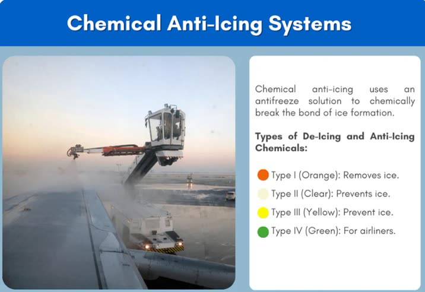

Lesson 07: De-icing and Anti-icing Fluids: Types I, II, III and IV
Learning objectives
- Compare the four SAE fluid types by composition, colour, use and holdover time.
- Explain fluid concentration and the Lowest Operational Use Temperature (LOUT).
- Recognise problems caused by thickened fluid residues.

The four fluid types
Aircraft de-icing/anti-icing fluids are mainly glycol (propylene or ethylene) and water. They are qualified to SAE specifications: AMS1424 for Type I and AMS1428 for Types II, III and IV.
| Type | Thickened? | Typical colour | Main use | Relative holdover time |
|---|---|---|---|---|
| I | No — low viscosity, flows off quickly | Orange | De-icing (heated); short-term protection | Short |
| II | Yes (pseudoplastic) | Colourless to pale yellow | Anti-icing for aircraft with rotation speeds above about 100 kt | Medium to long |
| III | Yes | Bright yellow | Anti-icing for aircraft with lower rotation speeds (about 60 kt and above); some are approved heated for de-icing | Between I and II |
| IV | Yes | Green | Anti-icing for aircraft with rotation speeds above about 100 kt | Longest |
Thickened fluids stay on the wing while the aircraft is stationary, then thin and shear off under the airflow of the take-off roll, so that the wing is clean at rotation. This is why a thickened fluid is only approved for aircraft whose take-off speed is high enough for it to flow off, as tested in the aerodynamic acceptance test. Use only fluids approved for your aircraft type.
Concentration
Fluids are applied neat or mixed with water. The mix is written as fluid/water:
- 100/0 — neat fluid, longest protection;
- 75/25 — three parts fluid, one part water;
- 50/50 — half fluid, half water, shortest protection, warmer temperatures only.
Type I is always diluted for use, according to the temperature.
Lowest Operational Use Temperature (LOUT)
Each fluid and mix has a LOUT. It is the higher of:
- the temperature at which the fluid passes the aerodynamic acceptance test for the aircraft category, and
- the fluid's freezing point plus a buffer — 10 °C for Type I and 7 °C for Types II, III and IV.
A fluid must not be used at an OAT (or aircraft skin temperature, if lower) below its LOUT.
Fluid residues
Repeated application of thickened fluids — particularly with one-step treatments using Type II or IV — can leave dried residue in aerodynamically quiet areas: control surface gaps, hinges, balance bays and trailing edges. The residue can rehydrate in rain or humidity, swell into a gel and freeze at altitude, restricting flight controls. Report any stiff or unusual control feel to maintenance (Lesson 23).
Handling cautions
- Do not spray thickened fluid onto cockpit windows — it smears and reduces visibility.
- Fluids are slippery and environmentally controlled; follow ramp and environmental rules.
- Fluid brands within a type have different holdover times. Use the brand-specific table when the fluid name is known.
Key takeaways
- Type I: unthickened, orange, de-icing, short protection. Types II and IV: thickened, longer protection, for faster aircraft. Type III: for lower rotation speeds.
- Concentration is written fluid/water — 100/0 gives the longest protection.
- LOUT: freezing point + 10 °C (Type I) or + 7 °C (II/III/IV), or the aerodynamic limit, whichever is higher.
- Thickened fluid residues can freeze in control surface gaps.
Knowledge check
Which fluid normally provides the longest holdover time?